FaithScore: Evaluating Hallucinations
in Large Vision-Language Models
Abstract
We introduce FaithScore (Faithfulness to Atomic Image Facts Score), a reference-free and fine-grained evaluation metric that measures the faithfulness of the generated free-form answers from large vision-language models (LVLMs). The FaithScore evaluation first identifies sub-sentences containing descriptive statements that need to be verified, then extracts a comprehensive list of atomic facts from these sub-sentences, and finally conducts consistency verification between fine-grained atomic facts and the input image. Meta-evaluation demonstrates that our metric highly correlates with human judgments of faithfulness. We collect two benchmark datasets (i.e. LLaVA-1k and MSCOCO-Cap) for evaluating LVLMs instruction-following hallucinations. We measure hallucinations in state-of-the-art LVLMs with FaithScore on the datasets. Results reveal that current systems are prone to generate hallucinated content unfaithful to the image, which leaves room for future improvements. Further, we find that current LVLMs despite doing well on color and counting, still struggle with long answers, relations, and multiple objects. Our implementations for the metric and benchmark datasets are publicly available at https://github.com/bcdnlp/FAITHSCORE.
1 Introduction
Large Language Models (LLMs), such as GPT-3 [5] and ChatGPT [30], have demonstrated various language modeling capabilities. Despite their achievements, they still lack the capacity to handle multimodal inputs effectively. As a result, a significant amount of research has shifted its focus towards Large Vision-Language Models (LVLMs) [25, 41, 35] by incorporating powerful LLMs [37, 6] and Vision Foundation Models (VFMs) [8, 4]. Furthermore, LVLMs have shown strong performance on various multimodal tasks, such as Visual Question Answering [1], Image Captioning [23], and Multimodal Conversation [25].
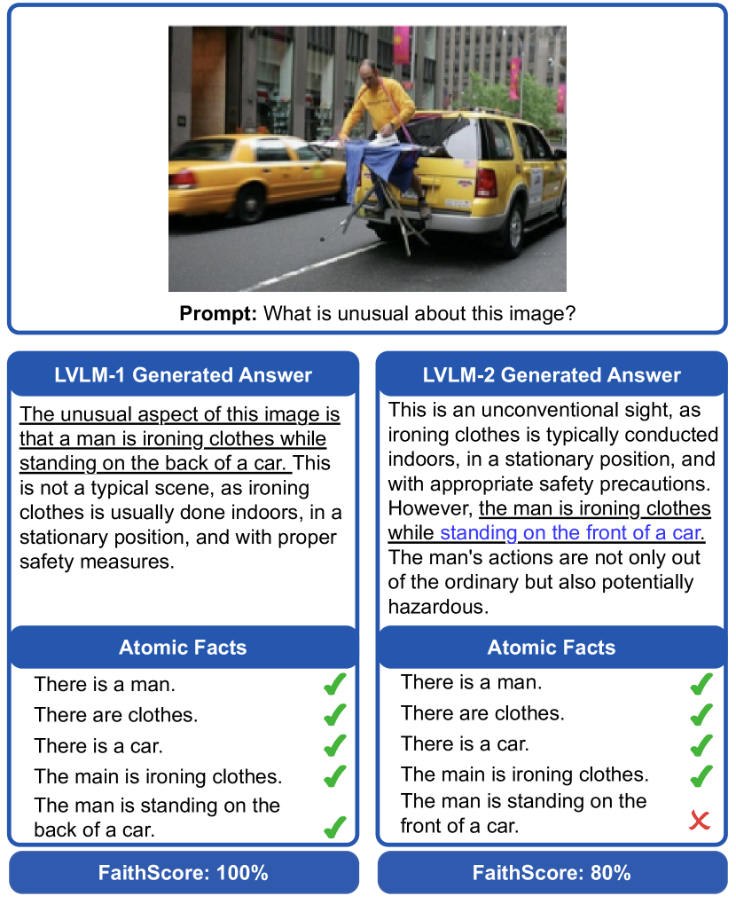
Despite the effectiveness of LVLMs, the problem of hallucination is pervasive and poses a significant challenge, often leading these models to generate misleading fabricated information that is incongruent with the provided visual input [33]. As shown in Figure 1, the LVLM-2 generates an answer with the inaccurate description (i.e. standing on the front of a car), which is not faithful towards the input image. The phenomenon of hallucination in LVLMs introduces potential hazards that could result in significant consequences such as misinformation and safety concerns, thus degrading the model’s application usability inevitably [27]. Hence, it is imperative that these issues are thoroughly measured and addressed [14].
However, there have been limited explorations that measure the degree of hallucinations in LVLMs. Li et al. [20] was among the first to propose to measure the hallucinations of LVLMs with a devised polling-based object probing evaluation method. In addition, Gunjal et al. [10] annotated a multi-modal hallucination detection dataset for detailed image description evaluation. Lovenia et al. [26] devised Negative Object Presence Evaluation (NOPE) using VQA to quantitatively evaluate object hallucination. The approaches, however, exhibit two key weaknesses: (1) they focus on the limited setting of image captioning, and none of them explored evaluating hallucination of the complex and free-form responses to the open-ended questions [31] (e.g. multimodal conversations [25, 36], world knowledge-based VQA [34] and visual storytelling [13]); (2) they ignore fine-grained attributes of hallucinations in the generations.
Evaluating hallucinations present in free-form responses is especially challenging for two primary reasons: (1) Free-form answers contain a hybrid of descriptive and analytical contents. Unlike image captioning, answering complex questions in a free-form manner does not only generate the descriptive content of the given image. It may also contain analytical content such as commonsense knowledge. As depicted in Figure 1, certain sub-sentences (i.e. those without the underline) do not require verification with the image input due to their analytical nature. More precisely, they encompass subjective analytical content that extends beyond the visual inputs, rather than solely offering a direct description of the visual modality. Neglecting to distinguish between analytical and descriptive content inevitably distracts the factual measurement. Thus, pinpointing the descriptive content within the responses generated by LVLMs is significant. (2) Model outputs are prone to the multiplicity of hallucinations. Current methodologies offer a constricted view on evaluating hallucinations, primarily concentrating on coarse-grained object existences, while neglecting other fine-grained elements, such as counts, colors, and the spatial interrelations between objects (e.g. the relation between the person and car in Figure 1), which also form a significant portion of visual hallucinations [10]. Consequently, devising a method to holistically evaluate fine-grained visual hallucinations is also important.
To address the aforementioned challenges, we propose the FaithScore metric. This metric comprises three primary components: Descriptive Sub-sentence Identification, Atomic Fact Generation, and Fact Verification, as illustrated in Figure 2. The first component is tasked with discerning descriptive sub-sentences within the composite content of the generated free-form answer. The second component deconstructs this descriptive content into fine-grained elements (i.e. atomic facts) [28]. These atomic facts cover a comprehensive list of types, such as objects attributes, and interrelationships. The last component emphasizes verifying the consistency between the visual information and the derived atomic facts via the Visual Entailment Model (VEM) [40]. Based on the proposed metric, we evaluated several advanced LVLMs. From the results, we conclude that current LVLMs still face challenges of unfaithful generations that are not grounded in the image, which leaves a large room for improvement.
In summary, our contributions are as follows: (1) We introduce FaithScore, a metric tailored to assess various types of hallucinations in LVLMs free-form answers to open-ended questions [25], which is rarely addressed by current studies; (2) To the best of our knowledge, we first systematically study the LVLMs free-form answers and evaluate the fine-grained hallucinations in them; (3) In our quest to understand the hallucinations manifested by LVLMs, we embark on comprehensive experiments with six publicly available models across diverse datasets. Our findings underscore that the hallucination phenomenon remains a pressing challenge for current LVLMs.
2 Related Work
Large Vision-Language Model
Motivated by the success of the pretraining technique in LLMs and Vision Foundation Models (VFMs), the multimodal learning research community has recently shifted the research attention to LVLMs. Contemporary advanced LVLMs predominantly feature three core components: a text encoder, an image encoder, and a cross-modal alignment module [33]. Specifically, the text encoder often takes the form of a language model, as seen in examples like LLaMA [37] and Vicuna [6]. Conversely, the image encoder is typically derived from VFMs, such as ViT [8]. The function of the cross-modal alignment module is to bridge visual content with textual representation, enhancing the text encoder’s capacity to interpret visual semantics. To accomplish visual understanding, LVLMs typically undergo multiple training phases [9, 42, 24]. For instance, Liu et al. [25] first aligns the image features with the word embeddings of a pre-trained LLM during an initial pre-training stage, and subsequently fine-tunes the LVLM using specialized language-image instruction-following datasets. For efficiency enhancement, LVLMs often freeze parameters of the LLM or VFM and are trained with efficient fine-tuned techniques [41, 7], such as LoRA [12].
However, in spite of the considerable advancements made by LVLMs, they consistently grapple with hallucination issues. These issues markedly impact their efficacy across a range of vision-language tasks [33].
Vision-language Model Hallucinations and Evaluations
Though hallucination phenomenons and mitigation methods have been extensively studied in the text generation literature [15, 29], it is much less investigated in vision-language models [7, 25]. Although there are few existing works tackling this issue, they mainly focus on the constraint problem setting such as image captioning [16]. For example, Rohrbach et al. [33] propose caption hallucination assessment with image relevance (CHAIR), which is a popular metric for evaluating object hallucination in sentence-level captions. They also show that popular metrics like METEOR [2] and CIDEr [38] do not capture this. Li et al. [20] extends CHAIR and proposes “POPE”, a polling-based query technique for probing objects. Besides, Lovenia et al. [26] devised Negative Object Presence Evaluation (NOPE) to quantitatively assess object hallucination through VQA, based on “POPE”. Gunjal et al. [10] further proposed to detect hallucinations in more detailed image captions and investigated utilizing a reward model for mitigating them.
Different from all the above, we are the first to propose a general metric for evaluating the responses in the open-ended visual question-answering setting, where answers are of free form and can be lengthy.
3 Estimating FaithScore
In this section, we begin by clearly defining the research problem in Section 3.1, followed by a detailed framework of estimating FaithScore in Section 3.2.
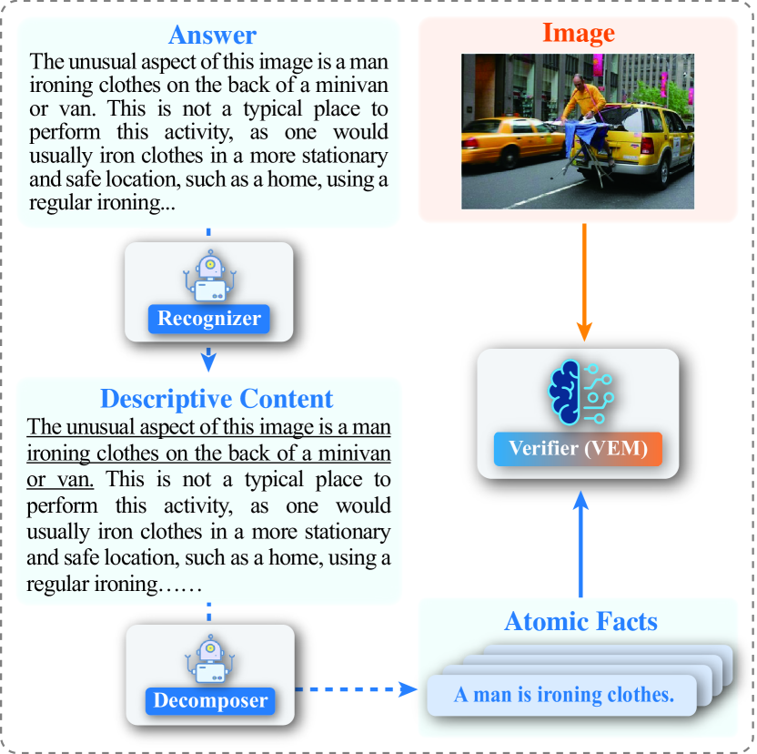
3.1 Task and Settings
Suppose we have an image and a question corresponding to the image and then feed them into an LVLM denoted as , and obtain the generated answer . Our objective is to design a scoring framework to estimate FaithScore based on the input prompt , the input image , and the generated answer . It is defined as: . is a real value ranging between 0 and 1. Notably, the devised evaluation method is reference-free and doesn’t require a ground truth answer.
3.2 The Evaluation Framework
In order to estimate the faithfulness of the generated answers (FaithScore), we introduce a novel framework to implement the scoring function . The framework comprises three key steps: descriptive sub-sentence identification, atomic fact generation, and fact verification, as depicted in Figure 2. We introduce Recognizer, Dcomposer, and Verifier modules, to fulfill these steps, respectively.
Descriptive Sub-sentence Identification.
Unlike LLMs, faithfulness in the context of LVLMs refers to the consistency between the input visual modality content and the generated answer. Notably, we focus on the contents that describe the input image objectively, as shown in Section 15 of the Appendix. To accomplish this, our first step is to identify the descriptive sub-sentences within the answer by a recognizer, to obtain a more precise and fine-grained understanding of the hallucination.
We have observed that humans are capable of distinguishing descriptive sub-sentences from other sub-sentences (referred to as analytical sub-sentences) by analyzing the semantics of these answers generated by LVLMs. However, manually identifying descriptive sub-sentences within the answers is a resource-intensive process, requiring both time and human labor. To address this problem, we turn to LLM to implement the recognizer as a practical solution, since it has demonstrated remarkable text analysis capabilities across a wide range of natural language processing tasks [30].
To be more specific, our approach first crafts a prompt that encompasses task instructions and in-context learning examples. This designed prompt is subsequently passed into the LLM, generating the recognized results, defined by the equation:
| (1) |
where signifies the generated result, from which we can extract all descriptive sub-sentences, denoted as . For a more comprehensive understanding of the specific prompt utilized in this process, please refer to Section G of the Appendix.
Atomic Fact Generation.
The descriptive sub-sentences denoted as encompass multiple pieces of information (i.e. atomic facts), each of which may be a hallucination or not. Therefore, to access a fine-grained evaluation, we design a decomposer to break the sub-sentences into atomic facts to get a fine-grained evaluation. In particular, we divide the atomic facts into five distinct categories: entity, count, color, relation, and other attributes, which can cover all the aspects of the original sentences. The other attribute includes all attributes of the entity which is not contained by the other four categories (e.g. “The building is very tall”). Specifically, we define atomic fact as the information belonging to one category in the above five categories. Importantly, the atomic fact is a minimal unit of information. This handling can ensure verification of each element in the answer without being disturbed by other information (unit). For example, for the category entity, each atomic fact does not involve more than two entities. In Figure 1, we show some examples of atomic facts. To facilitate deeper understanding, please refer to the prompt of atomic fact generation in Section G of the Appendix and get more examples of how to extract/generate atomic facts from the sentence.
This approach allows us to identify and assess hallucinations in terms of atomic levels and different categories. To achieve this, similar to the process of identifying descriptive sub-sentences, we also rely on the LLM for the generation of atomic facts. More precisely, we annotate a set of examples for demonstrations and prompt the LLM for sentence decomposition with as follows:
| (2) |
where are all descriptive sentences identified in step 1, represents all atomic facts belonging to the -th category, and stands for the total number of categories (i.e. 5 in our case). It is important to note that the set may be an empty set. For example, if an answer doesn’t contain color information, the corresponding set of the color category is empty. Further details regarding the specific prompt utilized in this process can be found in Section G of the Appendix.
Fact Verification.
To calculate the FaithScore for the responses of LVLMs, with the atomic facts derived above, we first compute the score for each fact and then aggregate them to derive the overall score using the following formula:
| (3) |
where represents the overall FaithScore of the answer . The function refers to the verification function (i.e. Verifier), which measures whether can be supported by the input image . To implement this function, we resort to the Visual Entailment Model (VEM) (e.g. OFA [39]), which is able to predict whether the image semantically entails the text. We elaborate on the models that we tried in Section 4.3. In particular, when the output of the VEM is positive, indicating that the image semantically entails the text , and negative otherwise. The parameter is a weighted factor that can be used to assign different weights to different atomic facts for various tasks. In this work, we set all the weights to 1, following the setting of the existing work [29, 17].
In addition, we further introduce a sentence-level FaithScore metric as follows,
| (4) |
where is the total number of descriptive sub-sentences in the answer and is the total number of descriptive sub-sentences with hallucinations.
4 Meta-evaluate FaithScore for Automatic Evaluation
To verify that our automatic evaluation correlates with human judgment, we conduct human evaluations in terms of hallucination. We select the test dataset from the LLaVA paper [25] for human evaluation. This test set is a visual instruction following dataset comprising three distinct question types: detailed description, conversation, and complex question. For each type, this dataset includes 90 questions. We select answers from LLaVA [25] and mPLUG-Owl [41] models for hallucination evaluation.
4.1 Human Evaluations/Annotations of Hallucinations
For each test example, we meticulously craft an annotation process to assign the faithfulness score to models’ generated answers via the subsequent steps.
Step 1: Sub-sentence Identification. Annotators first review the given question, the corresponding answer, and the associated image. Subsequently, they evaluate each sub-sentence extracted from the answer. If a sub-sentence is an objective description of visual information, they mark it as the “descriptive” category; otherwise, it’s categorized as “analytical”. For the “analytical” sub-sentence, annotators should skip the following steps. Otherwise, they should follow the next steps.
Step 2: Atomic Fact Generation and Revision. In this step, human annotators are asked to decompose the descriptive sub-sentences into a sequence of atomic facts. To optimize the annotation process and reduce the time required, we pre-supply atomic facts derived from ChatGPT. Annotators then have the flexibility to use or modify these facts as needed. In particular, annotators examine each atomic fact to ensure its fidelity to the given sub-sentence. The facts that are either redundant or non-atomic are asked to be removed. Subsequently, the focus shifts to the linguistic aspect, ensuring that each atomic fact is articulated in a coherent manner and that it accurately represents the original entity or concept of the answer by revising facts manually. Additionally, any missing atomic facts from the descriptive sub-sentence are added. For the process of removing and revising atomic facts, please refer to the Interface functionalities in the Appendix.
Step 3: Fact Verification. In this step, for every individual atomic fact derived from the descriptive sub-sentence, annotators assess its consistency with the given image. If the content of atomic facts is not present or contradicts the image, it’s identified as a hallucination, and accordingly marked as “yes”. Conversely, if the element is in alignment with the image, it’s validated and marked as “no”. To quantify the human evaluation of faithfulness, we employ the Likert Scale [21]. This approach transforms human evaluations into a tangible scale, ranging from 1 (being the poorest) to 5 (being the best). The details are given in Section A of the Appendix.
We employ 3 workers for annotation and each person annotated 180 testing samples, via Amazon Mechanical Turk111https://requester.mturk.com/.. They are paid 15-20 USD per hour. Every worker went through a qualification test of 2 hours and was tested to be highly qualified. We designed one HIT to consist of one question-answer pair. The average time to complete one HIT (including all steps of the annotation process) is 212.8 seconds. After the annotation, we calculate the inter-annotator agreement rate by the Fleiss’ . Firstly, we computed the Fleiss’ values across all annotators for the sub-sentence identification task, arriving at a value of 75.97%. This signifies a robust consensus among the annotators. Additionally, for the definitive faithfulness score (1-5 Likert Scale), we computed the values involving all annotators and achieved a result of 60.0%. This concordance among the evaluation participants suggests the human evaluation results are reliable. More details about the annotation process are provided in Section E of the Appendix.
| Recognizer | LVLM | Overall | |
|---|---|---|---|
| LLaVA | InstructBLIP | ||
| ChatGPT | 89.84 | 91.58 | 90.74 |
| LLaMA-7B | 68.01 | 71.39 | 69.75 |
| LLaMA-7B (w/ context) | 72.80 | 66.76 | 69.68 |
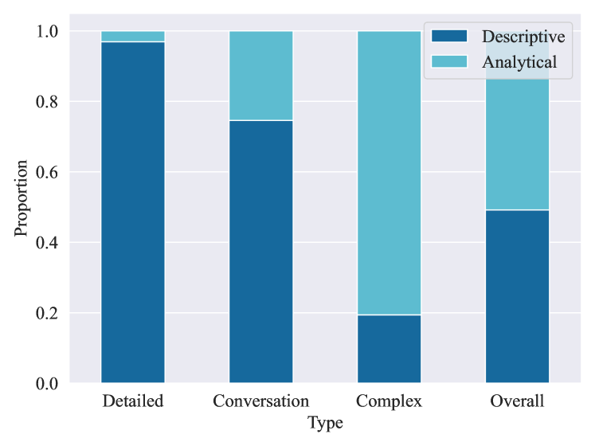
4.2 Recognizer Accuracy on Descriptive Sub-sentence Identification
To obtain the performance of recognizers (e.g. LLMs) on the sub-sentence identification task, we construct a sub-sentence identification dataset based on our annotated samples. The final label for each sub-sentence is determined by the majority voting scheme. The total number of sub-sentences is and the average number of sub-sentences in the answer is . We select the superior ChatGPT (Proprietary) and LLaMA-7B (Public) models for this task and report their accuracy on identifying descriptive sub-sentences. The results are shown in Table 1. ChatGPT outperforms LLaMA-7B on sub-sentence identification. For LLaMA-7B based method, when additional context beyond the sub-sentence itself is included, there is an improvement on LLaVA answers test set, but overall there is no significant improvement.
To prove the necessity of the sentence identification step, we calculate the proportion of descriptive and analytical sub-sentences in answers to different classes of input questions (Figure 3). We can observe that the distribution of sub-sentences is significantly different in different category questions. For example, detailed description questions only have a small portion of analytical sub-sentences, while complex questions have the opposite. In addition, analytical sub-sentences account for nearly half of the distribution of clauses in the overall annotated dataset, illustrating the importance of identifying analytical sub-sentences and excluding them from the fact checking step.
4.3 Verifier Accuracy on Fact Verification
Another key factor of our automatic method is the reliability of the verifier visual entailment model (VEM). Hence, we also evaluate the accuracy of different VEMs on the annotated samples. Because of the atomic fact revision operation during the annotation process, there may be some differences in atomic facts labeled by different annotators. To improve reliability, we only keep these atomic facts annotated by all three annotators for VEM evaluation. The final label for each atomic fact is determined by the majority voting scheme. The total number of atomic facts is and the average number of atomic facts in each answer is . For verifier VEMs, we evaluate OFA-EM, OFA [39], mPLUG [18], BLIP-2-flant5xl, BLIP-2-flant5xxl [19], LLaVA, and LLaVA-1.5 (Table 2). More details about these models are shown in Section B of the Appendix. Among all models, LLaVA-1.5 performs best on fact verification, so we use it for estimating FaithScore.
| Verifier | LVLM | Overall | |
|---|---|---|---|
| LLaVA | InstructBLIP | ||
| OFA-EM | 81.07 | 78.08 | 79.42 |
| OFA | 84.47 | 80.71 | 82.39 |
| mPLUG | 84.95 | 83.86 | 84.35 |
| BLIP-2-flant5xl | 78.64 | 77.42 | 77.97 |
| BLIP-2-flant5xxl | 82.36 | 83.20 | 82.83 |
| LLaVA | 67.25 | 67.10 | 67.17 |
| LLaVA-1.5 | 85.65 | 84.49 | 85.07 |
4.4 Correlations with Human Evaluations
To prove the superiority of our proposed metric FaithScore, we compare it with several multimodal generation evaluation metrics: BLEU-{4} [32], Rouge-{L} [22], METEOR [3], CHAIR [33], and CLIP-Score [11]. Table 3 delineates the correlation between various evaluation metrics and human judgment regarding LVLM faithfulness, gauged using Pearson’s , Spearman’s , and Kendall’s . Traditional metrics that require references (i.e. BLEU, ROUGE, and METEOR), have a poor correlation with human evaluation. For the open-ended question, it is hard to get a ground truth answer. For the reference answer, we use the answers provided by the LLaVA paper. This leads to a poor correlation between these metrics and human evaluation. Surprisingly, CLIP-Score shows a similar correlation with CHAIR which is devised for object hallucination evaluation. This demonstrates the robustness and generalization of CLIP-Score.
| Metric | (%) | (%) | (%) |
|---|---|---|---|
| BLEU-4 | -1.9 | -8.2 | -5.8 |
| ROUGE-L | -8.7 | -6.2 | -4.7 |
| METEOR | -12.2 | -8.5 | -6.3 |
| CHAIR | 16.8 | 19.2 | 14.8 |
| CLIP-Score | 19.8 | 16.6 | 11.7 |
| Ours | 48.17 | 38.44 | 47.61 |
| LLaVA-1k | MSCOCO-Cap | ||||
|---|---|---|---|---|---|
| Conversation | Detailed Description | Complex Question | Overall | - | |
| Multimodal-GPT | 0.5321 | 0.5299 | 0.5385 | 0.5335 | 0.5440 |
| MiniGPT-4 | 0.5679 | 0.5768 | 0.5691 | 0.5713 | 0.6359 |
| mPLUG-Owl | 0.7246 | 0.7240 | 0.7015 | 0.7167 | 0.8546 |
| InstructBLIP | 0.8061 | 0.8161 | 0.8049 | 0.8091 | 0.9392 |
| LLaVA | 0.8302 | 0.8386 | 0.8392 | 0.8360 | 0.8729 |
| LLaVA-1.5 | 0.8569 | 0.8611 | 0.8516 | 0.8566 | 0.9425 |
The original CHAIR exhibits a pronounced negative correlation with human evaluation as it is the degree of hallucination. Hence, we use the negative of CHAIR to compute the correlation. Compared with FaithScore, CHAIR achieves a sub-optimal degree of correlation. A potential reason for CHAIR’s deviation from human evaluation could be rooted in its inherent design, which narrows its focus predominantly to a limited range of objects. This constrained evaluation scope may not adeptly deal with fine-grained and open-domain hallucinations, thus diminishing its validity and resonance with more comprehensive human evaluations. To justify our viewpoint, we compute the average number of objects with CHAIR for each answer and the result is 2.4, which is far less than the average number of atomic facts (i.e. 11.3) found in our human evaluation. Amid the varied metrics landscape, our metric FaithScore distinctly shines. It shows a robust positive correlation, emphasizing its superior alignment with human perceptions.
5 Evaluating Vision-Language Model Hallucinations with FaithScore
| LLaVA-1k | MSCOCO-Cap | ||||
|---|---|---|---|---|---|
| Conversation | Detailed Description | Complex Question | Overall | - | |
| Multimodal-GPT | 0.4615 | 0.4827 | 0.5131 | 0.4858 | 0.6277 |
| MiniGPT-4 | 0.6441 | 0.6489 | 0.6499 | 0.6476 | 0.6017 |
| LLaVA | 0.7106 | 0.6979 | 0.7038 | 0.7041 | 0.6681 |
| InstructBLIP | 0.7231 | 0.7327 | 0.7149 | 0.7236 | 0.7970 |
| mPLUG-Owl | 0.7369 | 0.7163 | 0.7344 | 0.7292 | 0.6447 |
| LLaVA-1.5 | 0.7722 | 0.7717 | 0.7699 | 0.7713 | 0.8258 |
5.1 Models
We selected six open-source widely used LVLMs for evaluation. 1) MiniGPT-4 [42]; 2) LLaVA [25]; 3) InstrucBLIP [7]; 4) Multimodal-GPT [9]; 5) mPLUG-Owl [41]; 6) LLaVA-1.5 [24]. In particular, these LVLMs are composed of three essential components: a visual encoding module, an alignment mechanism, and a large language model. Furthermore, all of these models have undergone fine-tuning using curated datasets of visual instruction data. For example, LLaVA leverages text-only GPT-4 to expand the existing COCO [23] dataset to a multimodal instruction-following dataset.
5.2 Datasets
To assess the performance of existing LVLMs, we conducted experiments using two datasets. Here is a description of each dataset: (1) MSCOCO-Cap: This dataset is designed for the image captioning task. We randomly select 1,000 images from the MSCOCO [23] validation set and devised the prompt as “Generate a concise caption for the given image”; (2) LLaVA-1k: We extract 1,000 images from the COCO validation set and generated three types of prompt-answer pairs (i.e. detailed description, conversation, and complex question) for each image by ChatGPT, following the data generation methodology outlined in [25].
5.3 Hallucination Evaluation
Table 4 presents a comprehensive performance comparison of various models in terms of FaithScore when benchmarked on the LLaVA-1k and MSCOCO-Cap datasets. We observe that: (1) LLaVA-1.5 distinctly outperforms its counterparts on both datasets. This demonstrates its preeminent capability in achieving and maintaining faithfulness during generation processes. A significant contributor to the model’s standout performance is its extensive utilization of visual instruction data. This implies that leveraging vast amounts of academic-task-oriented VQA data with simple response formatting prompts might be key for future improvements in the field; (2) It’s worth noting that different models have similar performance across tasks. For instance, MiniGPT achieved 0.5679, 0.5768, and 0.5691 FaithScore on the “Conversation”, “Detailed Description”, and “Complex Question” tasks, respectively. These values are relatively close. Similar trends can also be seen in other models; (3) For all models, the performance on the MSCOCO-Cap dataset is better than their performance on the LLaVA-1K dataset. The potential reason may be that model answers to the MSCOCO-Cap questions are usually shorter than their answers to the LLaVA-1K questions (see Figure 4).
5.4 Sentence-level Hallucination Evaluation
To further understand the faithfulness of LVLMs, we evaluate them with the FaithScore(sentence-level). Table 5 shows the sentence-level FaithScore evaluation across different LVLMs. Upon analyzing the performance of different LVLMs across multiple datasets, several insights emerge: (1) The LLaVA-1.5 model consistently ranks among the top-performing models in most question categories across LLaVA-1k and MSCOCO-Cap datasets. The result indicates the consistency of the proposed metric across datasets to a certain extent. (2) Multimodal-GPT achieves poor performance in FaithScore it also performs less favorably in terms of sentence-level hallucination evaluation. In addition, LLaVA-1.5 performs best in terms of FaithScore and FaithScore(sentence-level). This indicates the consistency between FaithScore and sentence-level FaithScore.
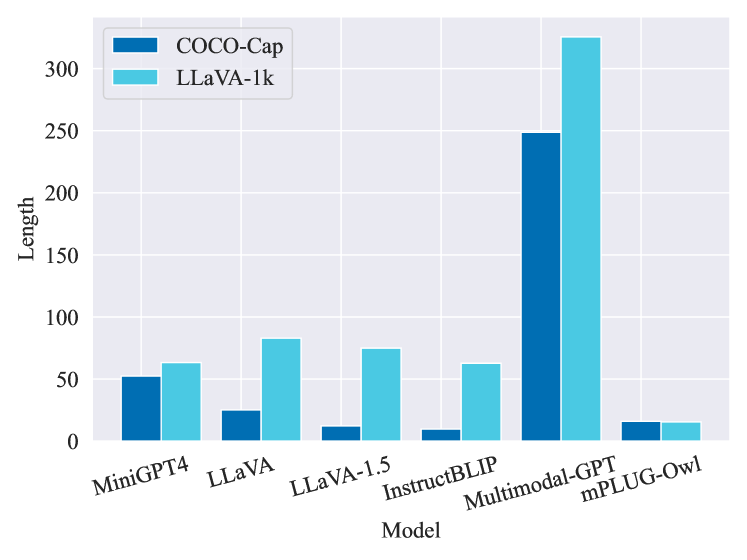
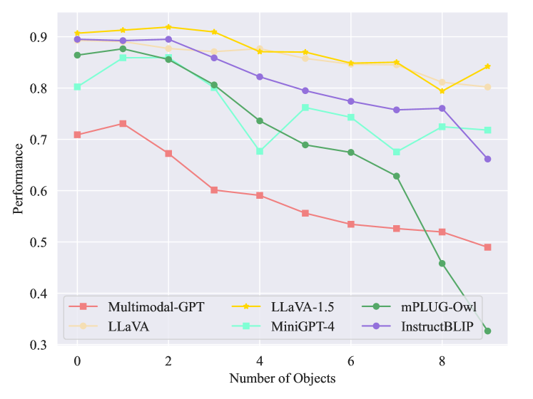
5.5 Other Analysis
The Influence of Answer Length on Hallucinations.
To further elucidate the impact of answer length on model-generated hallucinations, we analyze answer lengths across various LVLMs on different datasets. As illustrated in Figure 4, there’s a significant variation in the distribution of answer lengths produced by different models. Multimodal GPT consistently generates the lengthiest responses, potentially compromising its performance across tasks. In contrast, mPLUG-Owl tends to produce shorter answers than its counterparts, which could explain its good faithfulness across various tasks. Meanwhile, the image captioning task showed better faithfulness in generated content than the other task for most LVLMs. This may be attributed to the fact that captioning sentences mainly are brief descriptions and shorter.
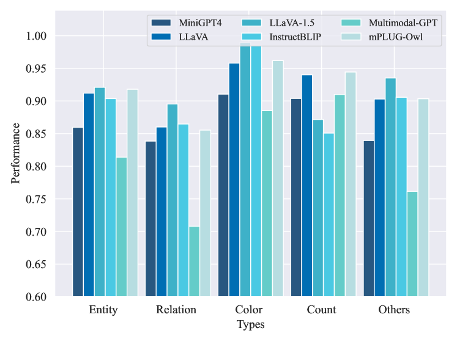
The influence of multiple objects.
Figure 5 shows how the number of objects in the answer generated by different models affects the FaithScoreİt is evident that the model’s faithfulness varies with the number of objects. While all models start with relatively high scores when there are few objects in the answer, their performance generally drop as the number of objects increases. For example, Instruct-BLIP starts with a high FaithScore of 0.895 for 1 object and sustains a relatively low score of 0.662 for 10 objects.
Analysis on Types of Hallucination
To deduce the model strengths and vulnerabilities of each in maintaining faithfulness, we compared the faithfulness performance of various models across different categories of hallucination. From Figure 6, we can observe that while LLaVA-1.5 consistently excels across most categories, other models also showcase strengths in specific domains. For instance, Multimodal-GPT performs worse in the faithfulness of most types but performs notably well in the faithfulness of count category. The bad performance of some types may provide insightful information for model improvement. Importantly, achieving consistently high faithfulness across a diverse range of categories remains a formidable challenge for LVLMs.
Hallucination in Advanced GPT-4Vision
Because of the limited access to the GPT-4Vision (GPT-4V) API, we cannot test it on all the examples. Instead, we selected several samples to test manually and conduct qualitative analysis. Because of the limited space, we present one testing sample in Figure 7. More testing samples on GPT-4Vision are shown in Section C of the Appendix. According to this sample, we found that the GPT-4V also suffers from the hallucination problem, for example, it generated the wrong relation between objects: “a person standing on an upside down skateboard”. – instead, the person is standing on the ground.
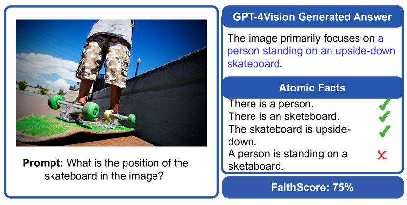
6 Conclusion
In this paper, we introduce a novel metric called FaithScore for evaluating free-form and open-domain answers generated by large vision-language models. Compared to previous metrics, FaithScore offers a finer level of granularity, interpretability, and closer alignment with human judgments. Our quantitative analysis demonstrates that current LVLMs are prone to visual hallucination problems. We also find that the answer length and number of objects could affect the faithfulness of LVLMs. In addition, the faithfulness performance of LVLMs on different types of atomic facts varies. We expect that FaithScore will be of great value for evaluating forthcoming advanced LVLMs.
References
- Antol et al. [2015] Stanislaw Antol, Aishwarya Agrawal, Jiasen Lu, Margaret Mitchell, Dhruv Batra, C. Lawrence Zitnick, and Devi Parikh. VQA: visual question answering. In 2015 IEEE International Conference on Computer Vision, ICCV 2015, Santiago, Chile, December 7-13, 2015, pages 2425–2433. IEEE Computer Society, 2015.
- Banerjee and Lavie [2005a] Satanjeev Banerjee and Alon Lavie. METEOR: An automatic metric for MT evaluation with improved correlation with human judgments. In Proceedings of the ACL Workshop on Intrinsic and Extrinsic Evaluation Measures for Machine Translation and/or Summarization, pages 65–72, Ann Arbor, Michigan, 2005a. Association for Computational Linguistics.
- Banerjee and Lavie [2005b] Satanjeev Banerjee and Alon Lavie. METEOR: an automatic metric for MT evaluation with improved correlation with human judgments. In Proceedings of the Workshop on Intrinsic and Extrinsic Evaluation Measures for Machine Translation and/or Summarization@ACL 2005, Ann Arbor, Michigan, USA, June 29, 2005, pages 65–72. Association for Computational Linguistics, 2005b.
- Bommasani et al. [2021] Rishi Bommasani, Drew A. Hudson, Ehsan Adeli, Russ B. Altman, Simran Arora, Sydney von Arx, Michael S. Bernstein, Jeannette Bohg, Antoine Bosselut, Emma Brunskill, Erik Brynjolfsson, Shyamal Buch, Dallas Card, Rodrigo Castellon, Niladri S. Chatterji, Annie S. Chen, Kathleen Creel, Jared Quincy Davis, Dorottya Demszky, Chris Donahue, Moussa Doumbouya, Esin Durmus, Stefano Ermon, John Etchemendy, Kawin Ethayarajh, Li Fei-Fei, Chelsea Finn, Trevor Gale, Lauren Gillespie, Karan Goel, Noah D. Goodman, Shelby Grossman, Neel Guha, Tatsunori Hashimoto, Peter Henderson, John Hewitt, Daniel E. Ho, Jenny Hong, Kyle Hsu, Jing Huang, Thomas Icard, Saahil Jain, Dan Jurafsky, Pratyusha Kalluri, Siddharth Karamcheti, Geoff Keeling, Fereshte Khani, Omar Khattab, Pang Wei Koh, Mark S. Krass, Ranjay Krishna, Rohith Kuditipudi, and et al. On the opportunities and risks of foundation models. CoRR, abs/2108.07258, 2021.
- Brown et al. [2020] Tom B. Brown, Benjamin Mann, Nick Ryder, Melanie Subbiah, Jared Kaplan, Prafulla Dhariwal, Arvind Neelakantan, Pranav Shyam, Girish Sastry, Amanda Askell, Sandhini Agarwal, Ariel Herbert-Voss, Gretchen Krueger, Tom Henighan, Rewon Child, Aditya Ramesh, Daniel M. Ziegler, Jeffrey Wu, Clemens Winter, Christopher Hesse, Mark Chen, Eric Sigler, Mateusz Litwin, Scott Gray, Benjamin Chess, Jack Clark, Christopher Berner, Sam McCandlish, Alec Radford, Ilya Sutskever, and Dario Amodei. Language models are few-shot learners. In Advances in Neural Information Processing Systems 33: Annual Conference on Neural Information Processing Systems 2020, NeurIPS 2020, December 6-12, 2020, virtual, 2020.
- Chiang et al. [2023] Wei-Lin Chiang, Zhuohan Li, Zi Lin, Ying Sheng, Zhanghao Wu, Hao Zhang, Lianmin Zheng, Siyuan Zhuang, Yonghao Zhuang, Joseph E. Gonzalez, Ion Stoica, and Eric P. Xing. vicuna: An opensource chatbot impressing gpt-4 with 90 2023.
- Dai et al. [2023] Wenliang Dai, Junnan Li, Dongxu Li, Anthony Meng Huat Tiong, Junqi Zhao, Weisheng Wang, Boyang Li, Pascale Fung, and Steven C. H. Hoi. Instructblip: Towards general-purpose vision-language models with instruction tuning. CoRR, abs/2305.06500, 2023.
- Dosovitskiy et al. [2021] Alexey Dosovitskiy, Lucas Beyer, Alexander Kolesnikov, Dirk Weissenborn, Xiaohua Zhai, Thomas Unterthiner, Mostafa Dehghani, Matthias Minderer, Georg Heigold, Sylvain Gelly, Jakob Uszkoreit, and Neil Houlsby. An image is worth 16x16 words: Transformers for image recognition at scale. In 9th International Conference on Learning Representations, ICLR 2021, Virtual Event, Austria, May 3-7, 2021. OpenReview.net, 2021.
- Gong et al. [2023] Tao Gong, Chengqi Lyu, Shilong Zhang, Yudong Wang, Miao Zheng, Qian Zhao, Kuikun Liu, Wenwei Zhang, Ping Luo, and Kai Chen. Multimodal-gpt: A vision and language model for dialogue with humans. CoRR, abs/2305.04790, 2023.
- Gunjal et al. [2023] Anisha Gunjal, Jihan Yin, and Erhan Bas. Detecting and preventing hallucinations in large vision language models. arXiv preprint arXiv:2308.06394, 2023.
- Hessel et al. [2021] Jack Hessel, Ari Holtzman, Maxwell Forbes, Ronan Le Bras, and Yejin Choi. Clipscore: A reference-free evaluation metric for image captioning. In Proceedings of the 2021 Conference on Empirical Methods in Natural Language Processing, EMNLP 2021, Virtual Event / Punta Cana, Dominican Republic, 7-11 November, 2021, pages 7514–7528. Association for Computational Linguistics, 2021.
- Hu et al. [2022] Edward J. Hu, Yelong Shen, Phillip Wallis, Zeyuan Allen-Zhu, Yuanzhi Li, Shean Wang, Lu Wang, and Weizhu Chen. Lora: Low-rank adaptation of large language models. In The Tenth International Conference on Learning Representations, ICLR 2022, Virtual Event, April 25-29, 2022. OpenReview.net, 2022.
- Huang et al. [2016] Ting-Hao ’Kenneth’ Huang, Francis Ferraro, N. Mostafazadeh, Ishan Misra, Aishwarya Agrawal, Jacob Devlin, Ross B. Girshick, Xiaodong He, Pushmeet Kohli, Dhruv Batra, C. Lawrence Zitnick, Devi Parikh, Lucy Vanderwende, Michel Galley, and Margaret Mitchell. Visual storytelling. In North American Chapter of the Association for Computational Linguistics, 2016.
- Ji et al. [2023a] Ziwei Ji, Nayeon Lee, Rita Frieske, Tiezheng Yu, Dan Su, Yan Xu, Etsuko Ishii, Yejin Bang, Andrea Madotto, and Pascale Fung. Survey of hallucination in natural language generation. ACM Comput. Surv., 55(12):248:1–248:38, 2023a.
- Ji et al. [2023b] Ziwei Ji, Nayeon Lee, Rita Frieske, Tiezheng Yu, Dan Su, Yan Xu, Etsuko Ishii, Ye Jin Bang, Andrea Madotto, and Pascale Fung. Survey of hallucination in natural language generation. ACM Computing Surveys, 55(12):1–38, 2023b.
- Johnson et al. [2016] Justin Johnson, Andrej Karpathy, and Li Fei-Fei. Densecap: Fully convolutional localization networks for dense captioning. In Proceedings of the IEEE Conference on Computer Vision and Pattern Recognition, 2016.
- Krishna et al. [2023] Kalpesh Krishna, Erin Bransom, Bailey Kuehl, Mohit Iyyer, Pradeep Dasigi, Arman Cohan, and Kyle Lo. Longeval: Guidelines for human evaluation of faithfulness in long-form summarization. In Proceedings of the 17th Conference of the European Chapter of the Association for Computational Linguistics, EACL 2023, Dubrovnik, Croatia, May 2-6, 2023, pages 1642–1661. Association for Computational Linguistics, 2023.
- Li et al. [2022] Chenliang Li, Haiyang Xu, Junfeng Tian, Wei Wang, Ming Yan, Bin Bi, Jiabo Ye, He Chen, Guohai Xu, Zheng Cao, Ji Zhang, Songfang Huang, Fei Huang, Jingren Zhou, and Luo Si. mplug: Effective and efficient vision-language learning by cross-modal skip-connections. In Proceedings of the 2022 Conference on Empirical Methods in Natural Language Processing, EMNLP 2022, Abu Dhabi, United Arab Emirates, December 7-11, 2022, pages 7241–7259. Association for Computational Linguistics, 2022.
- Li et al. [2023a] Junnan Li, Dongxu Li, Silvio Savarese, and Steven C. H. Hoi. BLIP-2: bootstrapping language-image pre-training with frozen image encoders and large language models. In International Conference on Machine Learning, ICML 2023, 23-29 July 2023, Honolulu, Hawaii, USA, pages 19730–19742. PMLR, 2023a.
- Li et al. [2023b] Yifan Li, Yifan Du, Kun Zhou, Jinpeng Wang, Wayne Xin Zhao, and Ji rong Wen. Evaluating object hallucination in large vision-language models. ArXiv, abs/2305.10355, 2023b.
- Likert [1932] Rensis Likert. A technique for the measurement of attitudes. Archives of psychology, 1932.
- Lin [2004] Chin-Yew Lin. ROUGE: A package for automatic evaluation of summaries. In Text Summarization Branches Out, pages 74–81, Barcelona, Spain, 2004. Association for Computational Linguistics.
- Lin et al. [2014] Tsung-Yi Lin, Michael Maire, Serge J. Belongie, James Hays, Pietro Perona, Deva Ramanan, Piotr Dollár, and C. Lawrence Zitnick. Microsoft COCO: common objects in context. In Computer Vision - ECCV 2014 - 13th European Conference, Zurich, Switzerland, September 6-12, 2014, Proceedings, Part V, pages 740–755. Springer, 2014.
- Liu et al. [2023a] Haotian Liu, Chunyuan Li, Yuheng Li, and Yong Jae Lee. Improved baselines with visual instruction tuning. arXiv preprint arXiv:2310.03744, 2023a.
- Liu et al. [2023b] Haotian Liu, Chunyuan Li, Qingyang Wu, and Yong Jae Lee. Visual instruction tuning. CoRR, abs/2304.08485, 2023b.
- Lovenia et al. [2023] Holy Lovenia, Wenliang Dai, Samuel Cahyawijaya, Ziwei Ji, and Pascale Fung. Negative object presence evaluation (nope) to measure object hallucination in vision-language models, 2023.
- MacLeod et al. [2017] Haley MacLeod, Cynthia L. Bennett, Meredith Ringel Morris, and Edward Cutrell. Understanding blind people’s experiences with computer-generated captions of social media images. In Proceedings of the 2017 CHI Conference on Human Factors in Computing Systems, Denver, CO, USA, May 06-11, 2017, pages 5988–5999. ACM, 2017.
- Min et al. [2023a] Sewon Min, Kalpesh Krishna, Xinxi Lyu, Mike Lewis, Wen tau Yih, Pang Wei Koh, Mohit Iyyer, Luke Zettlemoyer, and Hannaneh Hajishirzi. Factscore: Fine-grained atomic evaluation of factual precision in long form text generation, 2023a.
- Min et al. [2023b] Sewon Min, Kalpesh Krishna, Xinxi Lyu, Mike Lewis, Wen-tau Yih, Pang Wei Koh, Mohit Iyyer, Luke Zettlemoyer, and Hannaneh Hajishirzi. Factscore: Fine-grained atomic evaluation of factual precision in long form text generation. CoRR, abs/2305.14251, 2023b.
- OpenAI [2022] OpenAI. Chatgpt blog post. https://openai.com/blog/chatgpt, 2022.
- OpenAI [2023] OpenAI. Gpt-4v(ision) system card. OpenAI Blog Post, 2023.
- Papineni et al. [2002] Kishore Papineni, Salim Roukos, Todd Ward, and Wei-Jing Zhu. Bleu: a method for automatic evaluation of machine translation. In Proceedings of the 40th Annual Meeting of the Association for Computational Linguistics, July 6-12, 2002, Philadelphia, PA, USA, pages 311–318. ACL, 2002.
- Rohrbach et al. [2018] Anna Rohrbach, Lisa Anne Hendricks, Kaylee Burns, Trevor Darrell, and Kate Saenko. Object hallucination in image captioning. In Proceedings of the 2018 Conference on Empirical Methods in Natural Language Processing, Brussels, Belgium, October 31 - November 4, 2018, pages 4035–4045. Association for Computational Linguistics, 2018.
- Schwenk et al. [2022] Dustin Schwenk, Apoorv Khandelwal, Christopher Clark, Kenneth Marino, and Roozbeh Mottaghi. A-okvqa: A benchmark for visual question answering using world knowledge. arXiv, 2022.
- Sun et al. [2023] Zhiqing Sun, Sheng Shen, Shengcao Cao, Haotian Liu, Yikang Shen, Chuang Gan, Liang-Yan Gui, Yu-Xiong Wang, Yiming Yang, Kurt Keutzer, and Trevor Darrell. Aligning large multimodal models with factually augmented RLHF. CoRR, abs/2309.14525, 2023.
- Sundar and Heck [2022] Anirudh Sundar and Larry Heck. Multimodal conversational AI: A survey of datasets and approaches. In Proceedings of the 4th Workshop on NLP for Conversational AI, ConvAI@ACL 2022, Dublin, Ireland, May 27, 2022, pages 131–147. Association for Computational Linguistics, 2022.
- Touvron et al. [2023] Hugo Touvron, Thibaut Lavril, Gautier Izacard, Xavier Martinet, Marie-Anne Lachaux, Timothée Lacroix, Baptiste Rozière, Naman Goyal, Eric Hambro, Faisal Azhar, Aurélien Rodriguez, Armand Joulin, Edouard Grave, and Guillaume Lample. Llama: Open and efficient foundation language models. CoRR, abs/2302.13971, 2023.
- Vedantam et al. [2015] Ramakrishna Vedantam, C Lawrence Zitnick, and Devi Parikh. Cider: Consensus-based image description evaluation. In Proceedings of the IEEE conference on computer vision and pattern recognition, pages 4566–4575, 2015.
- Wang et al. [2022] Peng Wang, An Yang, Rui Men, Junyang Lin, Shuai Bai, Zhikang Li, Jianxin Ma, Chang Zhou, Jingren Zhou, and Hongxia Yang. OFA: unifying architectures, tasks, and modalities through a simple sequence-to-sequence learning framework. In International Conference on Machine Learning, ICML 2022, 17-23 July 2022, Baltimore, Maryland, USA, pages 23318–23340. PMLR, 2022.
- Xie et al. [2019] Ning Xie, Farley Lai, Derek Doran, and Asim Kadav. Visual entailment: A novel task for fine-grained image understanding. CoRR, abs/1901.06706, 2019.
- Ye et al. [2023] Qinghao Ye, Haiyang Xu, Guohai Xu, Jiabo Ye, Ming Yan, Yiyang Zhou, Junyang Wang, Anwen Hu, Pengcheng Shi, Yaya Shi, Chenliang Li, Yuanhong Xu, Hehong Chen, Junfeng Tian, Qian Qi, Ji Zhang, and Fei Huang. mplug-owl: Modularization empowers large language models with multimodality. CoRR, abs/2304.14178, 2023.
- Zhu et al. [2023] Deyao Zhu, Jun Chen, Xiaoqian Shen, Xiang Li, and Mohamed Elhoseiny. Minigpt-4: Enhancing vision-language understanding with advanced large language models. CoRR, abs/2304.10592, 2023.
Appendix A Likert Scale Guideline
For human evaluation, we utilize the Likert Scale to get the final faithfulness score for each testing sample. Specifically, suppose the generated answer consists of atomic facts, out of which atomic facts are determined as hallucinations. Both and are labeled by the annotators. The benchmark scoring guideline is outlined as follows:
-
•
Score 1: All atomic facts are hallucinations, symbolized as ;
-
•
Score 2: More than half of the atomic facts are hallucinations, represented as ;
-
•
Score 3: Half or fewer atomic facts are hallucinations, represented as ;
-
•
Score 4: Less than one-third of the atomic facts are hallucinations, which translates to ;
-
•
Score 5: All atomic facts accurately represent the visual content, meaning .
Appendix B Details about VEMs
We select OFA-EM, OFA222https://github.com/OFA-Sys/OFA. [39], mPLUG333https://github.com/X-PLUG/mPLUG. [18], BLIP-2-flant5xl, BLIP-2-flant5xxl444https://github.com/salesforce/LAVIS/tree/main/projects/blip2. [19], LLaVA [25], and LLaVA-1.5555https://github.com/haotian-liu/LLaVA. [24] as VEM for verifying the faithfulness between the input image and atomic facts. OFA-EM is an open-source model which was finetuned on the SNLE-VE dataset [40]. Hence, this model can tackle visual entailment tasks directly. For the other models, they are also open-source and finetuned on the visual question answering dataset. To enable them to tackle the visual entailment task, we get an input a prompt “Statement: {atomic facts} Is this statement right according to the image? Please output yes or no.”, into VEMs.
Appendix C Testing Examples of GPT-4Vision
Here we test the GPT-4Vision model on four examples. Based on the results, we can come to the conclusion that the GPT-4Vision answers still contain various hallucinations despite it may have very large parameters and have been trained with a large corpus, as shown in Figure 8.
Appendix D Examples of Annotated Data
Appendix E More Details about Human Evaluation
We show our human evaluation results and automatic evaluation results in Table 6. From this Table, we find that models that perform better in the manual evaluations also have better performance in the automated evaluations. This indicates the high correlation between objective and subjective evaluation.
To facilitate the annotator’s working process, we designed a user interface, as shown in Figure 13. Annotators have the option to start by reading the instructions located at the top of the interface, and they can access more detailed instructions through a link (refer to Figure 14). Following this, annotators can proceed to review the task description. In the third section, annotators can utilize buttons for sub-sentence identification and atomic fact verification. Simultaneously, they are able to add, modify, or delete atomic facts to enhance the quality of the atomic information. For example, the annotator should remove the duplicated atomic and add entity category fact “There are suitcases.” in Figure 12. Besides, we show a comprehensive correlation comparison in Table 7.
Appendix F Experimental Detail
We run all VLMs on an NVIDIA A100 GPU.
| Model | Human | Automatic |
|---|---|---|
| LLaVA | 0.7708 | 0.6997 |
| InstructBLIP | 0.7804 | 0.7165 |
| Metric | Pearson’s % | Spearman’s % | Kendall’s % |
|---|---|---|---|
| BLEU-1 | -15.1 | -10.3 | -7.5 |
| BLEU-2 | -12.7 | -9.0 | -6.6 |
| BLEU-3 | -7.2 | -10.6 | -7.6 |
| BLEU-4 | -1.9 | -8.2 | -5.8 |
| ROUGE-1 | -6.6 | -3.0 | -2.7 |
| ROUGE-2 | -5.7 | -4.4 | -3.4 |
| ROUGE-L | -8.7 | -6.2 | -4.7 |
| METEOR | -12.2 | -8.5 | -6.3 |
| CHAIR | 16.8 | 19.2 | 14.8 |
| CLIP-Score | 19.8 | 16.6 | 11.7 |
| Ours | 48.17 | 38.44 | 47.61 |
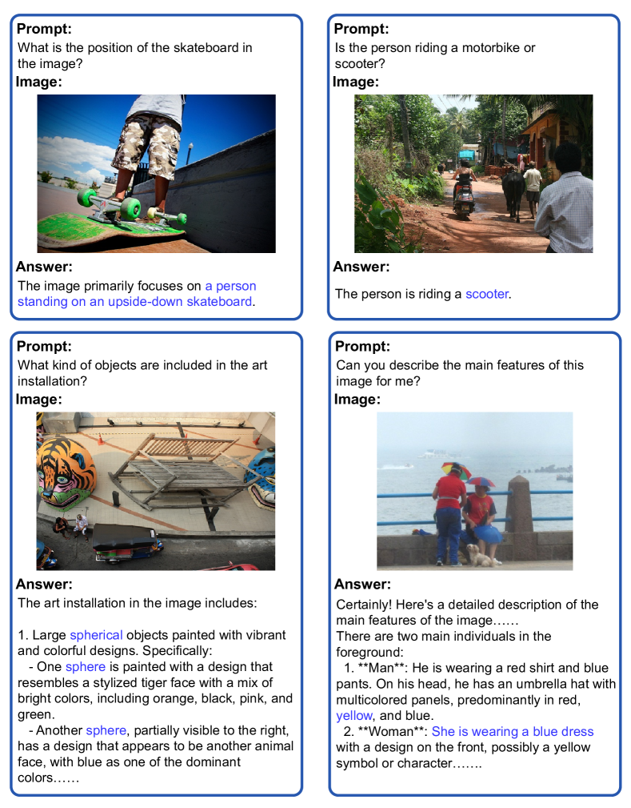
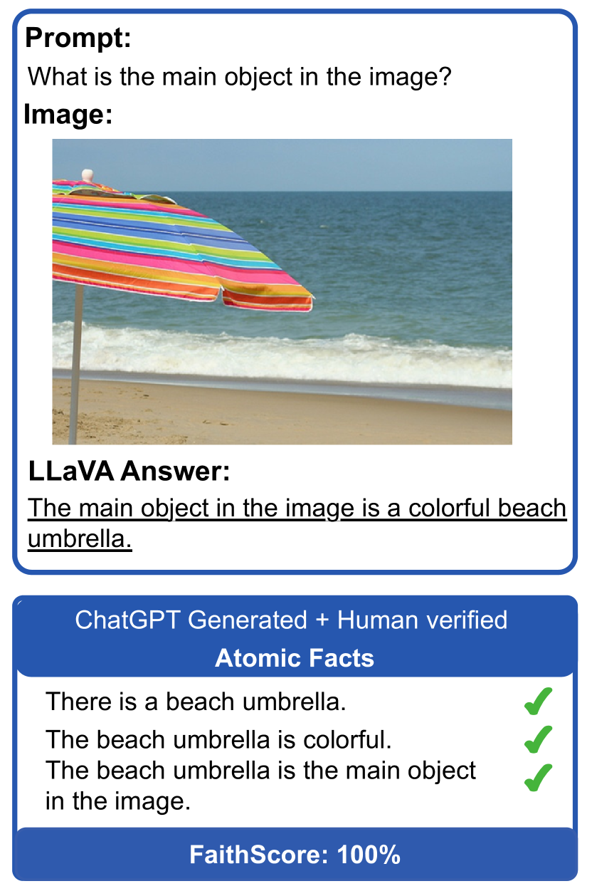
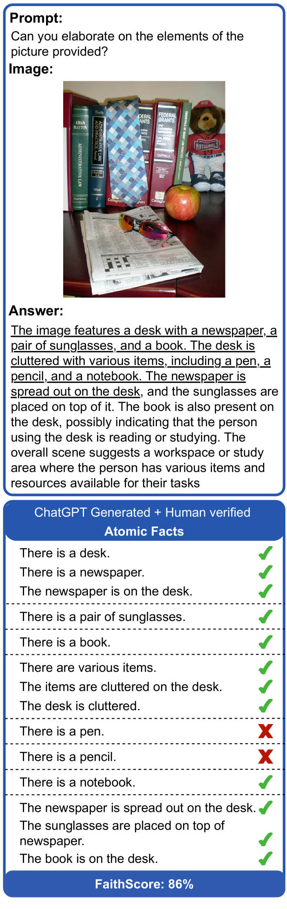
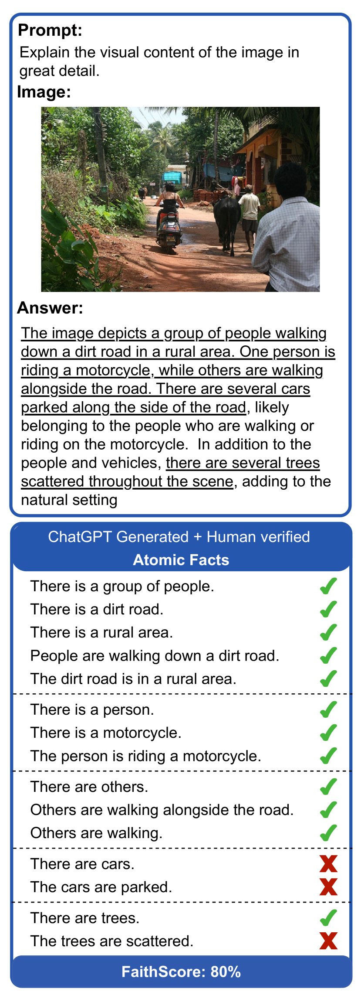
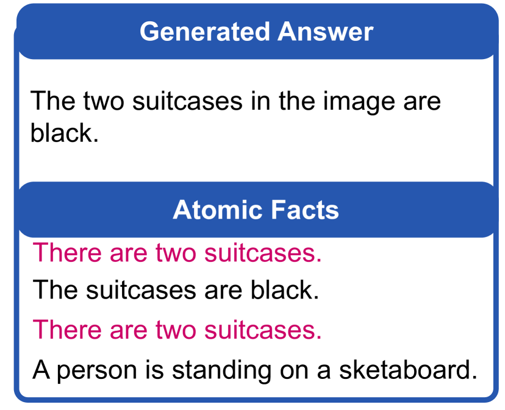
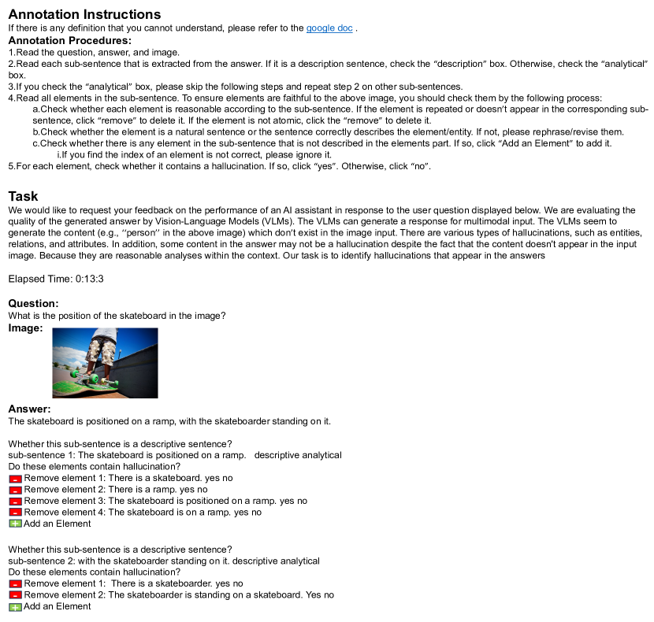
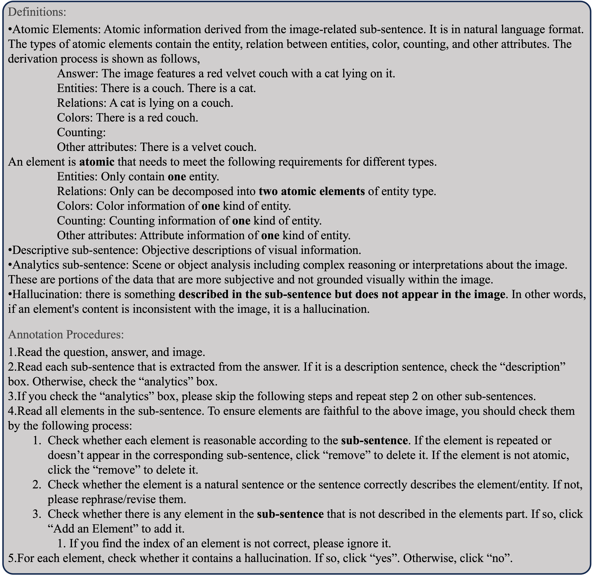
Appendix G Prompts
We detailed the prompts of sub-sentence identification and atomic fact generation in Figure 15 and Figure 16, respectively.
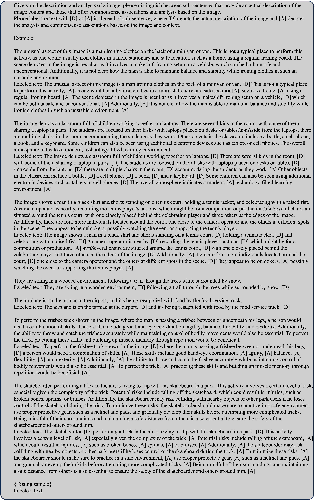
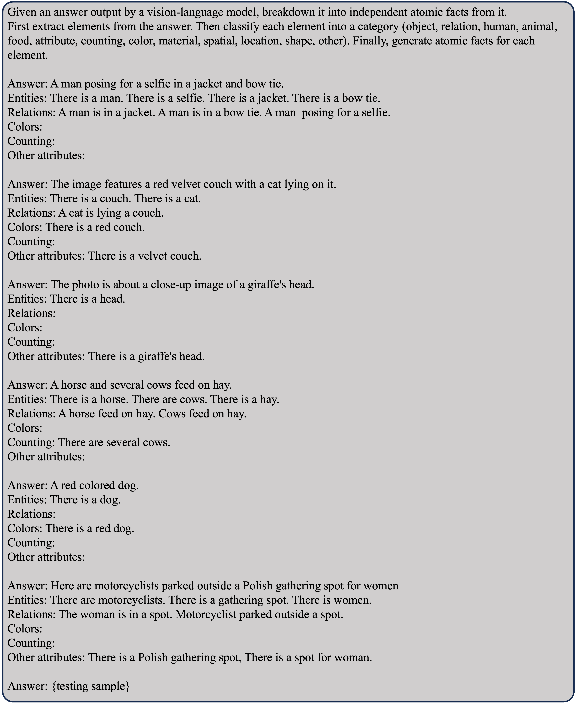